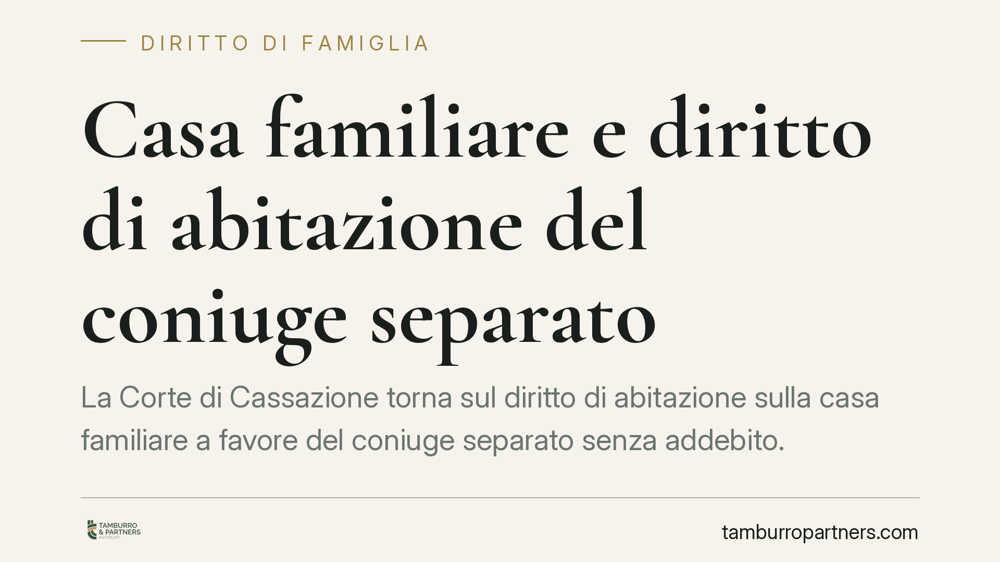

Casa familiare e diritto di abitazione del coniuge separato
La Corte di Cassazione torna sul diritto di abitazione sulla casa familiare a favore del coniuge separato senza addebito. Alla morte dell'altro coniuge, il superstite può conservare il diritto di abitazione sulla casa adibita a residenza familiare e il diritto d'uso sui mobili di corredo, salvo che l'immobile abbia perso ogni collegamento con la destinazione familiare. Un tema che incide su eredi e creditori.

Il quadro
Il diritto di abitazione sulla casa familiare è uno dei nodi più delicati delle successioni tra coniugi. La questione riguarda il coniuge superstite che, al momento del decesso dell'altro, si trovava in stato di separazione personale.
La giurisprudenza di legittimità mostra un orientamento che tende a riconoscere al coniuge separato senza addebito i diritti riservati dall'ordinamento al coniuge non separato, salvo un limite preciso legato all'effettiva destinazione dell'immobile. Rispetto a impostazioni più restrittive del passato, l'attenzione si sposta sul dato sostanziale: la casa continua a costituire, o no, il centro degli affetti e degli interessi familiari.
Inquadramento normativo
Due sono le disposizioni di riferimento.
L'art. 540, secondo comma, c.c. riserva al coniuge superstite, anche in presenza di altri chiamati, il diritto di abitazione sulla casa adibita a residenza familiare e il diritto d'uso sui mobili che la corredano, purché di proprietà del defunto o comuni. Attenzione alla distinzione: il diritto di abitazione riguarda l'immobile, il diritto d'uso riguarda i mobili di corredo, non l'immobile stesso.
Quanto alla posizione del coniuge separato, l'art. 548 c.c. equipara, ai fini successori, il coniuge cui la separazione non sia stata addebitata al coniuge non separato. Diverso è il caso della separazione con addebito, che comporta una posizione successoria più limitata (assegno vitalizio a determinate condizioni). La successione legittima, in assenza di testamento, è poi regolata dagli artt. 581 e seguenti c.c.
Su questo impianto si innesta l'orientamento della Cassazione: il coniuge separato senza addebito, in linea di principio, non perde i diritti riservati dall'art. 540 c.c.
Il limite: la destinazione familiare
Il punto qualificante non è l'assenza di addebito in sé, ma la persistenza del legame tra immobile e funzione familiare.
Se la casa ha perso ogni collegamento con la destinazione a residenza familiare, il fondamento stesso del diritto di abitazione viene meno. Rileva, ad esempio, la situazione in cui il coniuge separato aveva stabilmente lasciato l'immobile, aveva fissato altrove il proprio centro di vita, oppure la casa era stata destinata ad altri usi.
Si tratta di una valutazione di fatto, rimessa al giudice di merito, che va condotta caso per caso. Non esistono automatismi: contano i comportamenti concreti e la situazione reale al momento dell'apertura della successione.
Implicazioni pratiche
Gli effetti si distribuiscono su tre categorie di soggetti.
Coniuge superstite separato. Può vedersi riconosciuto il diritto di continuare ad abitare la casa familiare, con un vantaggio economico rilevante. Ma la sua posizione dipende dalla dimostrazione che l'immobile conservava la destinazione familiare.
Altri eredi. Il diritto di abitazione grava sull'asse ereditario e riduce il valore dei beni concretamente disponibili per gli altri chiamati. Chi eredita la nuda proprietà dell'immobile deve considerare che il godimento può spettare a lungo al coniuge superstite.
Istituti bancari e creditori. Un immobile gravato dal diritto di abitazione è meno appetibile e di più difficile realizzo. Chi valuta garanzie o azioni esecutive sul patrimonio ereditario deve verificare l'eventuale esistenza di tali diritti.
Cosa fare in concreto
- Verificate, in caso di separazione, se sia stato pronunciato o meno l'addebito: è il dato che incide sulla posizione successoria.
- Ricostruite l'effettivo utilizzo dell'immobile al momento del decesso: residenza anagrafica, presenza continuativa, eventuali altri usi.
- Conservate la documentazione utile a dimostrare la persistenza (o la cessazione) della destinazione familiare: utenze, corrispondenza, testimonianze.
- Chi acquista o accetta garanzie su beni ereditari controlli visure e situazione di fatto dell'immobile.
- Ricordate che, in materia successoria, i termini e i comportamenti concludenti possono incidere sulla posizione dell'erede: valutate ogni atto prima di compierlo.
Una nota di metodo
Le pronunce di legittimità in questa materia vanno lette nel contesto della singola fattispecie. L'affermazione di principio non sostituisce l'accertamento dei fatti concreti, che resta decisivo per stabilire se il diritto di abitazione spetti o meno.
Contributo informativo a cura di Tamburro & Partners Avvocati. Non costituisce parere legale.
Ogni famiglia ha il suo equilibrio.
Separazione, divorzio, affidamento, assegno: se vuoi un confronto riservato su una specifica situazione, scrivi allo studio. Ti rispondiamo entro un giorno lavorativo.